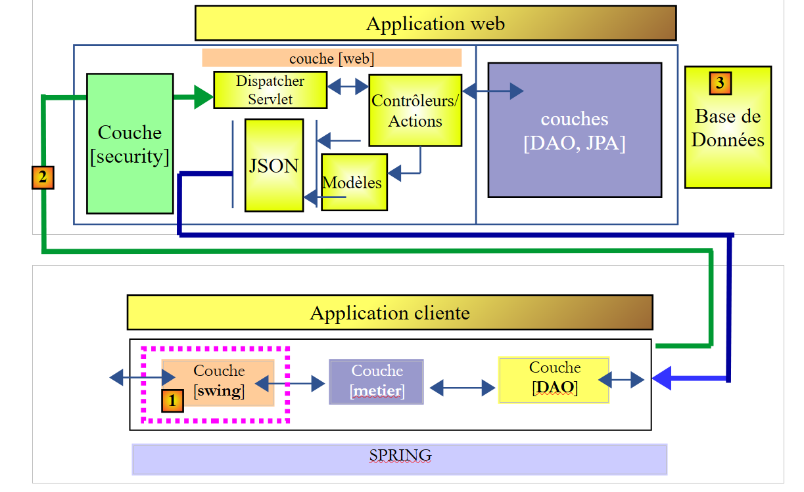
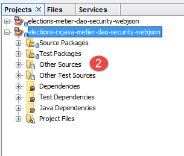
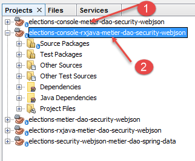
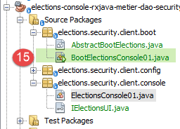
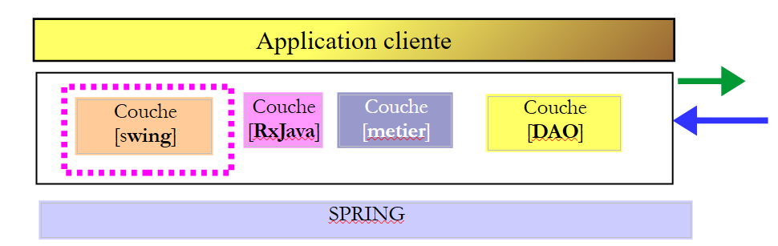

20. Programação assíncrona com RxJava
Leitura recomendada: [Introdução ao RxJava. Aplicação em ambientes Swing e Android.]
Neste capítulo, revisamos o Capítulo 17.6, onde construímos uma aplicação cliente/servidor com a seguinte arquitetura:
 |
Certas ações do utilizador na interface Swing em [1] desencadeiam ações que chegam até à base de dados em [3] através de uma rede HTTP [2]. Por este motivo, a resposta à ação do utilizador pode demorar mais ou menos tempo a chegar. Seria útil incluir um indicador de carregamento na interface do utilizador com uma opção para cancelar a operação iniciada caso demore demasiado tempo. No Capítulo 17.6, todas as ações do utilizador que requerem troca de dados com o servidor são síncronas. O manipulador de eventos executado pelo código não é concluído até que a resposta seja recebida. Durante este período, a interface gráfica fica congelada: não responde a novas ações do utilizador. Estas são simplesmente colocadas em fila para serem processadas assim que o manipulador de eventos atualmente em execução terminar. Assim, se fosse apresentado um botão de cancelamento, o utilizador poderia clicar nele, mas nada aconteceria até que a operação atual fosse concluída. O botão de cancelamento não teria, então, qualquer utilidade.
Para que o clique no botão de cancelamento tenha efeito, a operação atual deve ser concluída. Para conseguir isso, é necessário iniciar a operação de longa duração de forma assíncrona:
- o manipulador de eventos inicia a operação de longa duração, mas não aguarda o seu resultado e devolve o controlo à thread da IU que trata dos eventos da interface gráfica. A operação de longa duração é iniciada numa thread diferente da thread da IU, o que impede que esta última fique bloqueada;
- Se o utilizador clicar no botão Cancelar antes de a operação de longa duração estar concluída, a thread da IU inativa pode tratar este evento. A operação de longa duração pode então ser abandonada, ignorando o seu resultado;
- Se a operação de longa duração não tiver sido cancelada, a chegada da resposta irá desencadear um evento na thread da IU. Se a thread da IU estiver ociosa, irá então executar o código associado a este evento, o qual irá processar a resposta;
A interface do utilizador funcionará como antes. Se os tempos de resposta do servidor forem rápidos, o utilizador não notará qualquer diferença. Se forem percetíveis, o utilizador verá aparecer um botão de cancelamento e terá a opção de interromper a operação atual.
A biblioteca [Rx] permite a programação assíncrona. A sua principal vantagem reside no facto de ter sido portada para inúmeros ambientes (Java, .NET, JS, etc.) e de a proficiência num ambiente poder ser facilmente transferida para outro. Aqui, faremos referência ao Capítulo 2 do documento [Introdução ao RxJava. Aplicação aos ambientes Swing e Android]. Recomenda-se ao leitor que o leia. Nas secções seguintes, utilizaremos código dos exemplos deste capítulo.
Iremos desenvolver a arquitetura da aplicação da seguinte forma:
 |
- Em [1], inserimos uma camada [RxJava] entre a camada [Swing] e a camada [lógica de negócio]. Os métodos desta última serão agora chamados de forma assíncrona;
Vamos proceder em várias etapas:
- Etapa 1: A camada [lógica de negócio, DAO] apresenta atualmente uma interface síncrona para a camada [UI]. Vamos transformá-la numa camada assíncrona [RxJava, lógica de negócio, DAO];
- Passo 2: Iremos converter a aplicação de consola síncrona numa aplicação que permanece síncrona, mas utiliza a interface assíncrona [RxJava, business, DAO];
- Passo 3: Iremos converter a aplicação Swing síncrona numa aplicação Swing assíncrona;
20.1. Passo 1
Estamos a converter a camada síncrona atual [lógica de negócio, DAO] numa camada assíncrona [RxJava, lógica de negócio, DAO].
20.1.1. Criação
Começamos com o projeto Maven do Capítulo 17.4, que abrimos no NetBeans:
 |  |
Duplicamos este projeto [1] (copiar/colar) para um novo projeto [elections-rxjava-business-dao-security-webjson] [2].
20.1.2. Configuração do Maven
Atualizamos o ficheiro [pom.xml] do novo projeto para adicionar a dependência da biblioteca [RxJava]:
<project xmlns="http://maven.apache.org/POM/4.0.0" xmlns:xsi="http://www.w3.org/2001/XMLSchema-instance"
xsi:schemaLocation="http://maven.apache.org/POM/4.0.0 http://maven.apache.org/xsd/maven-4.0.0.xsd">
<modelVersion>4.0.0</modelVersion>
<groupId>istia.st.elections</groupId>
<artifactId>elections-metier-dao-security-rxjava-webjson</artifactId>
<version>0.0.1-SNAPSHOT</version>
<description>Client jUnit du serveur web / jSON</description>
<name>elections-metier-dao-security-rxjava-webjson</name>
<properties>
<project.build.sourceEncoding>UTF-8</project.build.sourceEncoding>
<java.version>1.8</java.version>
</properties>
<parent>
<groupId>org.springframework.boot</groupId>
<artifactId>spring-boot-starter-parent</artifactId>
<version>1.2.7.RELEASE</version>
</parent>
<dependencies>
<!-- Spring -->
<dependency>
<groupId>org.springframework</groupId>
<artifactId>spring-web</artifactId>
</dependency>
<!-- jSON library used by Spring -->
<dependency>
<groupId>com.fasterxml.jackson.core</groupId>
<artifactId>jackson-core</artifactId>
</dependency>
<dependency>
<groupId>com.fasterxml.jackson.core</groupId>
<artifactId>jackson-databind</artifactId>
</dependency>
<!-- component used by Spring RestTemplate -->
<dependency>
<groupId>org.apache.httpcomponents</groupId>
<artifactId>httpclient</artifactId>
</dependency>
<!-- Google Guava -->
<dependency>
<groupId>com.google.guava</groupId>
<artifactId>guava</artifactId>
<version>16.0.1</version>
<scope>test</scope>
</dependency>
<!-- log library -->
<dependency>
<groupId>org.springframework.boot</groupId>
<artifactId>spring-boot-starter-logging</artifactId>
</dependency>
<!-- Spring Boot Test -->
<dependency>
<groupId>org.springframework.boot</groupId>
<artifactId>spring-boot-starter-test</artifactId>
<scope>test</scope>
</dependency>
<!-- Spring Boot -->
<dependency>
<groupId>org.springframework.boot</groupId>
<artifactId>spring-boot</artifactId>
<scope>test</scope>
</dependency>
<!-- https://mvnrepository.com/artifact/io.reactivex/rxjava -->
<dependency>
<groupId>io.reactivex</groupId>
<artifactId>rxjava</artifactId>
<version>1.2.0</version>
</dependency>
</dependencies>
<build>
<plugins>
<plugin>
<groupId>org.apache.maven.plugins</groupId>
<artifactId>maven-surefire-plugin</artifactId>
<version>2.18.1</version>
</plugin>
</plugins>
</build>
</project>
- linhas 65–70: adicionámos a dependência da biblioteca RxJava;
20.1.3. Implementação assíncrona da camada [de negócios]
 |
Para implementar a camada [RxJava, de negócios], adicionamos uma interface assíncrona [IRxElectionsMetier] [1] e a sua implementação [RxElectionsMetier] [2] ao projeto:
 |
A interface [IRxElectionsMetier] é a interface assíncrona para a camada [RxJava, business]. O seu código é o seguinte:
package elections.security.client.metier;
import elections.security.client.entities.ListeElectorale;
import elections.security.client.entities.User;
import rx.Observable;
public interface IRxElectionsMetier {
// authentication
Observable<Void> authenticate(User user);
// get the lists in competition
Observable<ListeElectorale[]> getListesElectorales(User user);
// the number of seats to be filled
Observable<Integer> getNbSiegesAPourvoir(User user);
// the electoral threshold
Observable<Double> getSeuilElectoral(User user);
// recording results
Observable<Void> recordResultats(User user, ListeElectorale[] listesElectorales);
// calculating seats
Observable<ListeElectorale[]> calculerSieges(User user, ListeElectorale[] listesElectorales);
}
A interface [IRxElectionsMetier] herda os métodos da interface [IElectionsMetier], mas enquanto um método M na interface [IElectionsMetier] devolvia um resultado do tipo T, o método M na interface [IRxElectionsMetier] devolve um resultado do tipo Observable<T>. O tipo [Observable] é fornecido pela biblioteca RxJava. Um tipo Observable<T> fornece o método [subscribe], que recupera o tipo T de forma assíncrona. Três eventos estão associados a este método:
- onSuccess(T result), que notifica que um resultado do tipo T está disponível. A operação assíncrona pode devolver vários resultados;
- onError(Throwable th), que notifica que a operação assíncrona encontrou um erro;
- onCompleted(), que notifica que a operação assíncrona foi concluída;
Até que o método [Observable.subscribe] seja chamado, a operação assíncrona associada ao observável não é iniciada. O código que chama um método M da interface [IRxElectionsMetier] não obtém o resultado esperado T, mas um tipo Observable<T> que mais tarde lhe permitirá obter o resultado T chamando o método [Observable.subscribe].
A implementação [RxElectionsMetier] da interface [IRxElectionsMetier] é a seguinte:
package elections.security.client.metier;
import elections.security.client.entities.ListeElectorale;
import elections.security.client.entities.User;
import org.springframework.beans.factory.annotation.Autowired;
import org.springframework.stereotype.Component;
import rx.Observable;
@Component
public class RxElectionsMetier implements IRxElectionsMetier {
@Autowired
private IElectionsMetier metier;
@Override
public Observable<Void> authenticate(User user) {
...
}
@Override
public Observable<ListeElectorale[]> getListesElectorales(User user) {
return Observable.create(subscriber -> {
try {
// call synchronous method then reply to subscriber
subscriber.onNext(metier.getListesElectorales(user));
// we signal the end of the observable
subscriber.onCompleted();
} catch (Exception e) {
// we forward the exception
subscriber.onError(e);
}
});
}
@Override
public Observable<Integer> getNbSiegesAPourvoir(User user) {
...
}
@Override
public Observable<Double> getSeuilElectoral(User user) {
...
}
@Override
public Observable<Void> recordResultats(User user, ListeElectorale[] listesElectorales) {
...
}
@Override
public Observable<ListeElectorale[]> calculerSieges(User user, ListeElectorale[] listesElectorales) {
...
}
}
- linhas 12-13: injeção Spring da camada de negócios síncrona;
- linhas 20-34: comentaremos o método [getVoterLists], que, em vez de devolver um tipo [VoterList[]], devolve um tipo [Observable<VoterList[]>];
- linhas 22-32: o método estático [Observable.create] permite criar um Observable a partir de um tipo [Subscriber]. O tipo [Subscriber] representa um subscritor dos fluxos de resultados produzidos pelo processo observado (o Observable). Ele fornece três métodos:
- [Subscriber.onNext] (linha 25) para receber um resultado do processo observado;
- [Subscriber.onError] (linha 30) para receber uma exceção do processo observado. Após uma exceção, o tipo [Observable] deixa de emitir resultados;
- [Subscriber.onCompleted] (linha 27) para receber o sinal de fim de emissão do processo observado. Aqui, o processo observado emite apenas um elemento. Note-se que este sinal não é emitido se ocorrer uma exceção. Este é o comportamento padrão dos Observables: a emissão de uma exceção também sinaliza o fim das emissões. Os assinantes estão cientes disso;
- linhas 22–34: o método [Observable.create] recebe um tipo [Observable.OnSubscribe] como parâmetro. Este tipo é uma interface funcional. Este conceito foi introduzido com o Java 8 e refere-se a uma interface com um único método. Aqui, o único método da interface [Observable.OnSubscribe] é o seguinte:
Para implementar uma interface funcional de método único m(param1, param2, ..., paramn), pode utilizar a seguinte sintaxe simplificada:
É isto que é feito nas linhas 22–34:
- [subscriber] é o parâmetro do método [Observable.OnSubscribe.call];
- linhas 23–32: o código que queremos fornecer ao método [call];
- linha 25: solicitamos as listas de eleitores de forma síncrona à camada [business] injetada na linha 13. Teremos, portanto, de aguardar o resultado. Quando este é recebido, é passado para o método [onNext] do assinante;
- linha 28: em caso de erro, a exceção é passada para o método [onError] do assinante;
- linha 31: Aguardamos um único resultado. Assim que este for obtido (sejam as listas de eleitores ou uma exceção), notificamos o assinante de que o processo observado terminou de emitir resultados;
É importante lembrar que o método [RxElectionsMetier] retorna um tipo Observable<VoterList[]> e não o próprio tipo VoterList[]. O código de chamada deve chamar o método Observable<VoterList[]>.subscribe para que o código nas linhas 23–33 seja executado e retorne as listas de eleitores através da linha 25.
O código para os outros métodos é semelhante:
package elections.security.client.metier;
import elections.security.client.entities.ListeElectorale;
import elections.security.client.entities.User;
import org.springframework.beans.factory.annotation.Autowired;
import org.springframework.stereotype.Component;
import rx.Observable;
@Component
public class RxElectionsMetier implements IRxElectionsMetier {
@Autowired
private IElectionsMetier metier;
@Override
public Observable<Void> authenticate(User user) {
return Observable.create(subscriber -> {
try {
// synchronous method call
metier.authenticate(user);
// we signal the end of the observable
subscriber.onCompleted();
} catch (Exception e) {
// we forward the exception
subscriber.onError(e);
}
});
}
@Override
public Observable<ListeElectorale[]> getListesElectorales(User user) {
return Observable.create(subscriber -> {
try {
// call synchronous method then reply to subscriber
subscriber.onNext(metier.getListesElectorales(user));
// we signal the end of the observable
subscriber.onCompleted();
} catch (Exception e) {
// we forward the exception
subscriber.onError(e);
}
});
}
@Override
public Observable<Integer> getNbSiegesAPourvoir(User user) {
return Observable.create(subscriber -> {
try {
// call synchronous method then reply to subscriber
subscriber.onNext(metier.getNbSiegesAPourvoir(user));
// we signal the end of the observable
subscriber.onCompleted();
} catch (Exception e) {
// we forward the exception
subscriber.onError(e);
}
});
}
@Override
public Observable<Double> getSeuilElectoral(User user) {
return Observable.create(subscriber -> {
try {
// call synchronous method then reply to subscriber
subscriber.onNext(metier.getSeuilElectoral(user));
// we signal the end of the observable
subscriber.onCompleted();
} catch (Exception e) {
// we forward the exception
subscriber.onError(e);
}
});
}
@Override
public Observable<Void> recordResultats(User user, ListeElectorale[] listesElectorales) {
return Observable.create(subscriber -> {
try {
// synchronous method call
metier.recordResultats(user, listesElectorales);
// we signal the end of the observable
subscriber.onCompleted();
} catch (Exception e) {
// we forward the exception
subscriber.onError(e);
}
});
}
@Override
public Observable<ListeElectorale[]> calculerSieges(User user, ListeElectorale[] listesElectorales) {
return Observable.create(subscriber -> {
try {
// call synchronous method then reply to subscriber
subscriber.onNext(metier.calculerSieges(user, listesElectorales));
// we signal the end of the observable
subscriber.onCompleted();
} catch (Exception e) {
// we forward the exception
subscriber.onError(e);
}
});
}
}
- linhas 20 e 81: o método [onNext] do assinante não é chamado porque o assinante não espera quaisquer resultados;
20.1.4. Testes JUnit para a camada [business]
 |
20.1.4.1. Teste01
Revisamos o teste unitário [Test01] discutido na Secção 17.4.4. Este foi concebido para efetuar chamadas síncronas à interface [IElectionsMetier]. Modificamo-lo para que efetue chamadas síncronas à nova interface [IRxElectionsMetier]. É, de facto, possível efetuar chamadas síncronas a uma interface RxJava assíncrona. O código fica da seguinte forma:
package elections.security.client.metier.junit;
import org.junit.Assert;
import org.junit.BeforeClass;
import org.junit.Test;
import org.junit.runner.RunWith;
import org.springframework.beans.factory.annotation.Autowired;
import org.springframework.boot.test.SpringApplicationConfiguration;
import org.springframework.test.context.junit4.SpringJUnit4ClassRunner;
import com.fasterxml.jackson.core.JsonProcessingException;
import com.fasterxml.jackson.databind.ObjectMapper;
import elections.security.client.config.MetierConfig;
import elections.security.client.entities.ElectionsException;
import elections.security.client.entities.ListeElectorale;
import elections.security.client.entities.User;
import elections.security.client.metier.IRxElectionsMetier;
import rx.observables.BlockingObservable;
@SpringApplicationConfiguration(classes = MetierConfig.class)
@RunWith(SpringJUnit4ClassRunner.class)
public class Test01 {
// layer [electionsMetier]
@Autowired
private IRxElectionsMetier electionsMetier;
// mapper jSON
private final ObjectMapper mapper = new ObjectMapper();
// users
static private User admin;
static private User user;
static private User unknown;
@BeforeClass
public static void initTest() {
admin = new User("admin", "admin");
user = new User("user", "user");
unknown = new User("x", "y");
}
@Test()
public void checkUserUser() {
ElectionsException se = null;
try {
BlockingObservable.from(electionsMetier.authenticate(user)).firstOrDefault(null);
} catch (ElectionsException e) {
se = e;
}
Assert.assertNotNull(se);
Assert.assertEquals("403 Forbidden", se.getErreurs().get(0));
}
@Test()
public void checkUserUnknown() {
ElectionsException se = null;
try {
BlockingObservable.from(electionsMetier.authenticate(unknown)).firstOrDefault(null);
} catch (ElectionsException e) {
se = e;
}
Assert.assertNotNull(se);
Assert.assertEquals("401 Unauthorized", se.getErreurs().get(0));
}
@Test()
public void checkUserAdmin() {
ElectionsException se = null;
try {
BlockingObservable.from(electionsMetier.authenticate(admin)).firstOrDefault(null);
} catch (ElectionsException e) {
se = e;
}
Assert.assertNull(se);
}
/**
* vérification 1 : méthode de calcul des sièges on fixe en dur les listes
*/
@Test
public void calculSieges1() {
// create the table of 7 candidate lists
ListeElectorale[] listes = new ListeElectorale[7];
listes[0] = new ListeElectorale("A", 32000, 0, false);
listes[1] = new ListeElectorale("B", 25000, 0, false);
listes[2] = new ListeElectorale("C", 16000, 0, false);
listes[3] = new ListeElectorale("D", 12000, 0, false);
listes[4] = new ListeElectorale("E", 8000, 0, false);
listes[5] = new ListeElectorale("F", 4500, 0, false);
listes[6] = new ListeElectorale("G", 2500, 0, false);
// the seats for each list are calculated
listes = BlockingObservable.from(electionsMetier.calculerSieges(admin, listes)).first();
// check results
Assert.assertEquals(2, listes[0].getSieges());
Assert.assertFalse(listes[0].isElimine());
Assert.assertEquals(2, listes[1].getSieges());
Assert.assertFalse(listes[1].isElimine());
Assert.assertEquals(1, listes[2].getSieges());
Assert.assertFalse(listes[2].isElimine());
Assert.assertEquals(1, listes[3].getSieges());
Assert.assertFalse(listes[3].isElimine());
Assert.assertEquals(0, listes[4].getSieges());
Assert.assertFalse(listes[4].isElimine());
Assert.assertEquals(0, listes[5].getSieges());
Assert.assertTrue(listes[5].isElimine());
Assert.assertEquals(0, listes[6].getSieges());
Assert.assertTrue(listes[6].isElimine());
}
/**
* vérification 2 : méthode de calcul des sièges on demande les listes à la couche [metier] puis on fixe en dur les
* voix
*/
@Test
public void calculSieges2() {
// create the table of 7 candidate lists
ListeElectorale[] listes = BlockingObservable.from(electionsMetier.getListesElectorales(admin)).first();
// the voices are hard-fixed
listes[0].setVoix(32000);
listes[1].setVoix(25000);
listes[2].setVoix(16000);
listes[3].setVoix(12000);
listes[4].setVoix(8000);
listes[5].setVoix(4500);
listes[6].setVoix(2500);
// the seats obtained by each list are calculated
listes = BlockingObservable.from(electionsMetier.calculerSieges(admin, listes)).first();
// check results
Assert.assertEquals(2, listes[0].getSieges());
Assert.assertFalse(listes[0].isElimine());
Assert.assertEquals(2, listes[1].getSieges());
Assert.assertFalse(listes[1].isElimine());
Assert.assertEquals(1, listes[2].getSieges());
Assert.assertFalse(listes[2].isElimine());
Assert.assertEquals(1, listes[3].getSieges());
Assert.assertFalse(listes[3].isElimine());
Assert.assertEquals(0, listes[4].getSieges());
Assert.assertFalse(listes[4].isElimine());
Assert.assertEquals(0, listes[5].getSieges());
Assert.assertTrue(listes[5].isElimine());
Assert.assertEquals(0, listes[6].getSieges());
Assert.assertTrue(listes[6].isElimine());
}
/**
* vérification 3 méthode de calcul des sièges on provoque une exception
*/
@Test(expected = ElectionsException.class)
public void calculSieges3() {
// we create a table of 24 candidate lists, each with 1 vote
ListeElectorale[] listes = new ListeElectorale[25];
// all 25 lists will have the same number of votes (4%)
for (int i = 0; i < listes.length; i++) {
listes[i] = new ListeElectorale("Liste" + (i + 1), 1, 0, false);
}
// calculation of seats - normally there should be a ElectionsException
// with an electoral threshold of 5%
BlockingObservable.from(electionsMetier.calculerSieges(admin, listes)).first();
}
/**
* enregistrement des résultats de l'élection
*
* @throws JsonProcessingException
*/
@Test
public void ecritureResultatsElections() throws JsonProcessingException {
// create the table of 7 candidate lists
ListeElectorale[] listes = BlockingObservable.from(electionsMetier.getListesElectorales(admin)).first();
// the voices are hard-fixed
listes[0].setVoix(32000);
listes[1].setVoix(25000);
listes[2].setVoix(16000);
listes[3].setVoix(12000);
listes[4].setVoix(8000);
listes[5].setVoix(4500);
listes[6].setVoix(2500);
// the seats obtained by each list are calculated
listes = BlockingObservable.from(electionsMetier.calculerSieges(admin, listes)).first();
// display results
for (int i = 0; i < listes.length; i++) {
System.out.println(mapper.writeValueAsString(listes[i]));
}
// results are entered into the database
BlockingObservable.from(electionsMetier.recordResultats(admin, listes)).firstOrDefault(null);
// check results
listes = BlockingObservable.from(electionsMetier.getListesElectorales(admin)).first();
// display results
for (int i = 0; i < listes.length; i++) {
System.out.println(mapper.writeValueAsString(listes[i]));
}
Assert.assertEquals(2, listes[0].getSieges());
Assert.assertFalse(listes[0].isElimine());
Assert.assertEquals(2, listes[1].getSieges());
Assert.assertFalse(listes[1].isElimine());
Assert.assertEquals(1, listes[2].getSieges());
Assert.assertFalse(listes[2].isElimine());
Assert.assertEquals(1, listes[3].getSieges());
Assert.assertFalse(listes[3].isElimine());
Assert.assertEquals(0, listes[4].getSieges());
Assert.assertFalse(listes[4].isElimine());
Assert.assertEquals(0, listes[5].getSieges());
Assert.assertTrue(listes[5].isElimine());
Assert.assertEquals(0, listes[6].getSieges());
Assert.assertTrue(listes[6].isElimine());
}
}
Vamos examinar as alterações:
- linha 48: o método estático [BlockingObservable.from(Observable).first]:
- subscreve o observável passado como parâmetro para [from];
- desencadeia a execução do código associado ao observável;
- aguarda para receber o primeiro resultado. Trata-se, portanto, de uma operação síncrona;
Utilizamos aqui o método [firstOrDefault(null)] porque o observável [metier.authenticate] não devolve um resultado quando executado. O resultado do método [firstOrDefault(null)] será, portanto, nulo, um valor que não é utilizado aqui;
Repetimos este padrão ao longo do resto do código sempre que queremos chamar a camada [business].
O teste unitário [Test01] deve ser aprovado:
 |
Tarefa: Verifique se o teste [Test01] é bem-sucedido.
20.1.4.2. Test02
Modificamos o teste [Test01] para agora testar a interface assíncrona [IRxElectionsMetier], efetuando chamadas assíncronas aos seus métodos.
Vamos examinar um teste inicial:
// thread synchronization semaphore
private CountDownLatch latch;
// -----------------------------------
private ElectionsException checkUserUserException;
@Test()
public void checkUserUser() throws InterruptedException {
// 1" semaphore
latch = new CountDownLatch((1));
// asynchronous operation
electionsMetier.authenticate(user).subscribeOn(Schedulers.io())
.subscribe((result) -> {
},
(th) -> {
checkUserUserException = (ElectionsException) th;
latch.countDown();
},
() -> {
latch.countDown();
});
// waiting for semaphore
latch.await();
// checking results
Assert.assertNotNull(checkUserUserException);
Assert.assertEquals("403 Forbidden", checkUserUserException.getErreurs().get(0));
}
- Linha 2: Um semáforo é uma ferramenta utilizada para sincronizar threads entre si. As threads são fluxos de execução que decorrem em paralelo. Para executar a tarefa T1, a thread [Thread1] pode necessitar que a tarefa T2, executada pela thread [Thread2], esteja concluída. Por isso, aguarda que a thread [Thread2] lhe envie um sinal indicando que a tarefa T2 está concluída. Existem várias formas de gerir esta sincronização entre duas threads. O método utilizado aqui é o seguinte:
- linha 10: a thread [Thread1] cria um semáforo com o valor 1;
- linha 12: a thread [Thread1] cria e inicia uma thread [Thread2]. Isto é feito utilizando a sintaxe:
electionsMetier.authenticate(user).subscribeOn(Schedulers.io())
O método [Observable.subscribeOn] define a thread na qual o processo observado será executado. O parâmetro de [subscribeOn] é um pool de threads. A biblioteca RxJava fornece vários pools adequados a diferentes situações. O pool [Schedulers.io()] é o recomendado para operações de rede;
- (continuação)
- linhas 12-13: a operação
electionsMetier.authenticate(user).subscribeOn(Schedulers.io()).subscribe(...)
executa a operação síncrona encapsulada no observável [authenticate(user)]. Mas, como esta operação síncrona é iniciada numa thread diferente da [Thread1], esta última não aguarda a resposta do método [subscribe] e passa para a instrução seguinte;
- (continuação)
- linha 23: a thread [Thread1] faz uma pausa e aguarda que o semáforo passe para 0 (atualmente está em 1);
- linhas 13–21: o método [subscribe] recebe três funções lambda como parâmetros:
- a primeira [(result)->{...}] é chamada sempre que o observável [authenticate(user)] emite um resultado [result]. Aqui temos um observável [authenticate(user)] que faz algo, mas não emite nenhum resultado. A lambda [(result)->{}] nunca será, portanto, chamada. É por isso que o seu código está vazio aqui [{}];
- a segunda [(th)->{...}] recebe um tipo [Throwable] como parâmetro. É chamada quando a execução do observável encontra uma exceção. Aqui, tratamos o parâmetro [Throwable th] da seguinte forma:
- linha 16: armazenamo-lo num campo da classe de teste do tipo [ElectionsException], porque o observável executado apenas lança este tipo de exceção;
- linha 17: definimos o semáforo como 0 para indicar que o thread [Thread2] terminou o seu trabalho;
- o terceiro [()->{...}] é chamado quando o observável não tem mais elementos para emitir. Tratamos este evento da seguinte forma:
- linha 20: definimos o semáforo como 0 para indicar que a thread [Thread2] terminou o seu trabalho;
Note que o terceiro lambda não é chamado se ocorrer uma exceção. É por isso que tivemos de definir o semáforo para 0 também na linha 17;
- linha 25: quando chegamos a esta linha, o observável terminou o seu trabalho. Podemos então realizar as mesmas verificações que no teste [Test01];
Vamos examinar outro teste:
// -----------------------------------
private ElectionsException calculSieges1Exception;
private ListeElectorale[] listesCalculSieges1;
@Test
public void calculSieges1() throws InterruptedException {
// create the table of 7 candidate lists
ListeElectorale[] listes = new ListeElectorale[7];
listes[0] = new ListeElectorale("A", 32000, 0, false);
listes[1] = new ListeElectorale("B", 25000, 0, false);
listes[2] = new ListeElectorale("C", 16000, 0, false);
listes[3] = new ListeElectorale("D", 12000, 0, false);
listes[4] = new ListeElectorale("E", 8000, 0, false);
listes[5] = new ListeElectorale("F", 4500, 0, false);
listes[6] = new ListeElectorale("G", 2500, 0, false);
// 1" semaphore
latch = new CountDownLatch((1));
// asynchronous operation
// the seats for each list are calculated
electionsMetier.calculerSieges(admin, listes).subscribeOn(Schedulers.io())
.subscribe((result) -> {
listesCalculSieges1 = result;
},
(th) -> {
calculSieges1Exception = (ElectionsException) th;
latch.countDown();
},
() -> {
latch.countDown();
});
// waiting for semaphore
latch.await();
// check results
Assert.assertNull(calculSieges1Exception);
Assert.assertEquals(2, listesCalculSieges1[0].getSieges());
Assert.assertFalse(listesCalculSieges1[0].isElimine());
Assert.assertEquals(2, listesCalculSieges1[1].getSieges());
Assert.assertFalse(listesCalculSieges1[1].isElimine());
Assert.assertEquals(1, listesCalculSieges1[2].getSieges());
Assert.assertFalse(listesCalculSieges1[2].isElimine());
Assert.assertEquals(1, listesCalculSieges1[3].getSieges());
Assert.assertFalse(listesCalculSieges1[3].isElimine());
Assert.assertEquals(0, listesCalculSieges1[4].getSieges());
Assert.assertFalse(listesCalculSieges1[4].isElimine());
Assert.assertEquals(0, listesCalculSieges1[5].getSieges());
Assert.assertTrue(listesCalculSieges1[5].isElimine());
Assert.assertEquals(0, listesCalculSieges1[6].getSieges());
Assert.assertTrue(listesCalculSieges1[6].isElimine());
}
- linhas 20–30: execução assíncrona do observável [electionsMetier.calculateSeats(admin, lists)];
- linhas 21–23: a execução do observável retorna um tipo [VoterList[]], que é armazenado num campo da classe de teste, linha 3;
- linhas 34–48: estas verificações são as do teste [Test01], às quais adicionámos a verificação na linha 34 que garante que não ocorreu nenhuma exceção;
O teste [Test02] completo está disponível nos materiais do curso.
Tarefa: Execute o teste [Test02] e verifique se ele é aprovado.
20.1.4.3. Test03
O teste [Test03] faz o mesmo que o teste [Test01]: testa a interface [IRxElectionsMetier] utilizando chamadas síncronas a essa interface. É uma cópia do teste [Test02] com duas diferenças:
- os observáveis já não são executados numa thread diferente daquela que está a executar os testes. Quando a thread [Thread1] executa o método [subscribe] de um observável, inicia uma operação HTTP para o servidor também na thread [Thread1]. Todo o método [subscribe] torna-se então síncrono;
- uma vez que agora existe apenas uma thread, a sincronização de threads torna-se desnecessária e o semáforo desaparece;
Aqui estão dois exemplos de testes:
// -----------------------------------
private ElectionsException checkUserUserException;
@Test()
public void checkUserUser() throws InterruptedException {
// synchronous operation
electionsMetier.authenticate(user)
.subscribe((result) -> {
},
(th) -> {
checkUserUserException = (ElectionsException) th;
},
() -> {
});
// checking results
Assert.assertNotNull(checkUserUserException);
Assert.assertEquals("403 Forbidden", checkUserUserException.getErreurs().get(0));
}
- linha 7: por predefinição, o método [electionsMetier.authenticate(user).subscribe] é executado na thread do código de chamada. Trata-se, portanto, de uma operação síncrona;
// -----------------------------------
private ElectionsException calculSieges1Exception;
private ListeElectorale[] listesCalculSieges1;
@Test
public void calculSieges1() throws InterruptedException {
// create the table of 7 candidate lists
ListeElectorale[] listes = new ListeElectorale[7];
listes[0] = new ListeElectorale("A", 32000, 0, false);
listes[1] = new ListeElectorale("B", 25000, 0, false);
listes[2] = new ListeElectorale("C", 16000, 0, false);
listes[3] = new ListeElectorale("D", 12000, 0, false);
listes[4] = new ListeElectorale("E", 8000, 0, false);
listes[5] = new ListeElectorale("F", 4500, 0, false);
listes[6] = new ListeElectorale("G", 2500, 0, false);
// synchronous operation
// the seats for each list are calculated
electionsMetier.calculerSieges(admin, listes)
.subscribe((result) -> {
listesCalculSieges1 = result;
},
(th) -> {
calculSieges1Exception = (ElectionsException) th;
},
() -> {
});
// check results
Assert.assertNull(calculSieges1Exception);
Assert.assertEquals(2, listesCalculSieges1[0].getSieges());
Assert.assertFalse(listesCalculSieges1[0].isElimine());
Assert.assertEquals(2, listesCalculSieges1[1].getSieges());
Assert.assertFalse(listesCalculSieges1[1].isElimine());
Assert.assertEquals(1, listesCalculSieges1[2].getSieges());
Assert.assertFalse(listesCalculSieges1[2].isElimine());
Assert.assertEquals(1, listesCalculSieges1[3].getSieges());
Assert.assertFalse(listesCalculSieges1[3].isElimine());
Assert.assertEquals(0, listesCalculSieges1[4].getSieges());
Assert.assertFalse(listesCalculSieges1[4].isElimine());
Assert.assertEquals(0, listesCalculSieges1[5].getSieges());
Assert.assertTrue(listesCalculSieges1[5].isElimine());
Assert.assertEquals(0, listesCalculSieges1[6].getSieges());
Assert.assertTrue(listesCalculSieges1[6].isElimine());
}
Tarefa: Execute o teste [Test03] e verifique se ele é aprovado.
20.2. Passo 2
Vamos agora converter a aplicação de consola síncrona do Capítulo 17.5 numa aplicação que continua a ser síncrona, mas que utiliza a interface assíncrona [RxJava, lógica de negócio, DAO];
 |
Começamos com o projeto [elections-console-business-dao-security-webjson] [1] do Capítulo 17.5, que duplicamos para um novo projeto [elections-console-rxjava-business-dao-security-webjson] [2]:
 |  |
- Em [3-4], no novo projeto, removemos a dependência da antiga camada [business] síncrona;
 |  |
- Em [5-9], adicionamos uma dependência da nova camada [de negócios] assíncrona;
 |  |
- em [10-14], renomeamos a classe [ElectionsConsole] para [ElectionsConsole01];
Da mesma forma, renomeamos a classe [BootElectionsConsole] para [BootElectionsConsole01]:
 |
O código atual da classe [BootElectionsConsole01] é o seguinte:
package elections.security.client.boot;
import elections.security.client.console.IElectionsUI;
public class BootElectionsConsole01 extends AbstractBootElections{
public static void main(String[] arguments) {
new BootElectionsConsole01().run();
}
@Override
protected IElectionsUI getUI() {
return ctx.getBean("electionsConsole",IElectionsUI.class);
}
}
- Linha 13: Como alterámos o nome da classe de [ElectionsConsole] para [ElectionsConsole01], temos agora de escrever:
return ctx.getBean("electionsConsole01",IElectionsUI.class);
Voltemos ao código da classe [ElectionsConsole01]:
@Component
public class ElectionsConsole01 implements IElectionsUI {
@Autowired
private IElectionsMetier electionsMetier;
@Autowired
private User admin;
@Override
public void run() {
// competing lists
ListeElectorale[] listes;
// data entry
try (Scanner clavier = new Scanner(System.in)) {
// lists in competition are requested from the [metier] layer
listes = electionsMetier.getListesElectorales(admin);
...
// we calculate the number of seats
listes=electionsMetier.calculerSieges(admin,listes);
// we record the results
electionsMetier.recordResultats(admin,listes);
...
}
Se seguirmos o exemplo do teste [Test01] na secção 20.1.4.1, as linhas 5, 17, 20 e 22 serão alteradas da seguinte forma:
@Component
public class ElectionsConsole01 implements IElectionsUI {
@Autowired
private IRxElectionsMetier electionsMetier;
@Autowired
private User admin;
@Override
public void run() {
// competing lists
ListeElectorale[] listes;
// data entry
try (Scanner clavier = new Scanner(System.in)) {
// lists in competition are requested from the [metier] layer
listes = BlockingObservable.from(electionsMetier.getListesElectorales(admin)).first();
...
// we calculate the number of seats
listes = BlockingObservable.from(electionsMetier.calculerSieges(admin, listes)).first();
// we record the results
BlockingObservable.from(electionsMetier.recordResultats(admin, listes));
...
}
Tarefa: Configure o projeto para executar a classe [BootElectionsConsole01] com os três parâmetros [SS, Horas trabalhadas, Dias trabalhados] e verifique se a execução do projeto, tal como configurado, produz os resultados esperados.
Tarefa: Configure o projeto para executar o par [BootElectionsConsole02, ElectionsConsole02], em que a classe [ElectionsConsole02] foi escrita seguindo o modelo do teste [Test02] na Secção 20.1.4.2.
Tarefa: Configure o projeto para executar o par [BootElectionsConsole03, ElectionsConsole03], em que a classe [ElectionsConsole03] foi escrita seguindo o modelo do teste [Test03] na Secção 20.1.4.3.
20.3. Passo 3
Vamos agora proceder à portabilidade da aplicação Swing para um ambiente assíncrono.
 |
Começamos por duplicar o projeto [elections-swing-metier-dao-security-webjson] [1] do Capítulo 17.6 para um novo projeto [elections-swing-rxjava-metier-dao-security-webjson] [2]:
 |  |
- em [3, 4], removemos a dependência da camada síncrona [console];
 |  |
- em [5-9], adicionamos uma dependência da camada de console assíncrona;
A camada [swing] fará chamadas verdadeiramente assíncronas à camada [business]. Ao chamar um método nesta última, haverá duas threads:
- a thread da interface do utilizador, que lida com eventos;
- uma thread de E/S que executará a chamada HTTP para o servidor;
Ao longo da chamada assíncrona, devemos exibir uma imagem de carregamento e um botão de cancelamento. Não faremos isso aqui, e isso será sugerido a si como uma melhoria para a aplicação. As alterações são feitas nas duas classes que fazem chamadas à camada [business]:
 |
20.3.1. Configuração do Maven
Aqui, vamos utilizar a biblioteca [RxSwing], que amplia a biblioteca [RxJava] com funcionalidades disponíveis apenas num ambiente Swing. Para tal, modificamos o ficheiro [pom.xml] da seguinte forma:
<project xmlns="http://maven.apache.org/POM/4.0.0" xmlns:xsi="http://www.w3.org/2001/XMLSchema-instance"
xsi:schemaLocation="http://maven.apache.org/POM/4.0.0 http://maven.apache.org/xsd/maven-4.0.0.xsd">
<modelVersion>4.0.0</modelVersion>
<groupId>istia.st.elections</groupId>
<artifactId>elections-swing-rxjava-metier-dao-security-webjson</artifactId>
<version>0.0.1-SNAPSHOT</version>
<name>elections-swing-rxjava-metier-dao-security-webjson</name>
<description>couche swing asynchrone du client web / jSON</description>
<properties>
<project.build.sourceEncoding>UTF-8</project.build.sourceEncoding>
<java.version>1.8</java.version>
<maven.compiler.source>1.8</maven.compiler.source>
<maven.compiler.target>1.8</maven.compiler.target>
</properties>
<dependencies>
<!-- RxSwing -->
<!-- https://mvnrepository.com/artifact/io.reactivex/rxswing -->
<dependency>
<groupId>io.reactivex</groupId>
<artifactId>rxswing</artifactId>
<version>0.27.0</version>
</dependency>
<!-- lower layers -->
<dependency>
<groupId>istia.st.elections</groupId>
<artifactId>elections-console-rxjava-metier-dao-security-webjson</artifactId>
<version>0.0.1-SNAPSHOT</version>
</dependency>
</dependencies>
</project>
20.3.2. A classe [ElectionsConnectForm]
Numa operação assíncrona, a classe [ElectionsConnectForm] passa a ter o seguinte aspeto:
package elections.security.client.swing;
import elections.security.client.console.IElectionsUI;
import elections.security.client.entities.User;
import java.awt.Dimension;
import java.awt.Toolkit;
import javax.swing.SwingUtilities;
import elections.security.client.metier.IRxElectionsMetier;
import org.springframework.beans.factory.annotation.Autowired;
import org.springframework.stereotype.Component;
import rx.schedulers.Schedulers;
import rx.schedulers.SwingScheduler;
@Component
public class ElectionsConnectForm extends AbstractElectionsConnectForm implements IElectionsUI {
private static final long serialVersionUID = 1L;
// reference to the asynchronous [business] layer
@Autowired
private IRxElectionsMetier metier;
// logged-in user
private User user;
// main form
@Autowired
private ElectionsMainForm electionsMainForm;
// session UI
@Autowired
private UiSession uiSession;
@Override
protected void doConnect() {
if (isPageValid()) {
// user authentication
metier.authenticate(user).subscribeOn(Schedulers.io()).observeOn(SwingScheduler.getInstance()).subscribe(
// there is no answer
(result) -> {
},
// exception management
(th) -> {
// we note the error
String info = getInfoForException("Les erreurs suivantes se sont produites :", th);
// display info
jTextPaneErreurs.setText(info);
jTextPaneErreurs.setCaretPosition(0);
},
// authentication is complete
() -> {
// the user is stored in the session
uiSession.setUser(user);
// connection view is hidden
setVisible(false);
// the main view is displayed
electionsMainForm.run();
});
}
}
// initializations
@Override
protected void init() {
...
}
@Override
public void run() {
// the graphical interface is displayed
SwingUtilities.invokeLater(new Runnable() {
public void run() {
init();
setVisible(true);
}
});
}
private boolean isPageValid() {
...
}
private String getInfoForException(String message, Throwable ex) {
...
}
}
- Linhas 36–63: O método [doConnect] é executado quando o utilizador toca na opção de menu [Ligar]:
 |
Está tudo na linha 40:
metier.authenticate(user).subscribeOn(Schedulers.io()).observeOn(SwingScheduler.getInstance()).subscribe(...)
- O processo observado é [metier.authenticate(user)];
- será executado numa thread de E/S retirada do pool [Schedulers.io()];
- será observado na thread da interface do utilizador, aquela que lida com eventos da interface Swing [observeOn(SwingScheduler.getInstance())]. Esta thread é obtida através do método [SwingScheduler.getInstance()], onde [SwingScheduler] é uma classe fornecida pela biblioteca [RxSwing]. Isto é obrigatório. Quando o resultado da operação assíncrona é obtido, é frequentemente utilizado para modificar elementos da interface Swing. No entanto, a interface Swing só pode ser modificada na thread da interface do utilizador; caso contrário, é lançada uma exceção. As linhas 41–61 devem, portanto, ser executadas na thread da interface do utilizador. Isto é garantido aqui pelo método [observeOn(SwingScheduler.getInstance())];
Vamos comentar o resto do código:
- linhas 42–43: estas linhas existem para cumprir a sintaxe do método [subscribe]. Nunca serão executadas porque o processo [metier.authenticate(user)] não retorna nenhum resultado;
- linhas 35–52: quando uma exceção é recebida, ela é exibida;
- linhas 54-61: executadas quando o processo [metier.authenticate(user)] sinaliza o fim das suas emissões;
20.3.3. A classe [ElectionsMainForm]
|
20.3.3.1. Inicialização da interface gráfica do utilizador
package elections.security.client.swing;
import elections.security.client.console.IElectionsUI;
import elections.security.client.entities.ListeElectorale;
import elections.security.client.entities.User;
import elections.security.client.metier.IRxElectionsMetier;
import org.springframework.beans.factory.annotation.Autowired;
import org.springframework.stereotype.Component;
import rx.schedulers.Schedulers;
import rx.schedulers.SwingScheduler;
import javax.swing.*;
import java.awt.*;
import java.util.ArrayList;
import java.util.List;
@Component
public class ElectionsMainForm extends AbstractElectionsMainForm implements IElectionsUI {
private static final long serialVersionUID = 1L;
// reference to the asynchronous [business] layer
@Autowired
private IRxElectionsMetier metier;
// session UI
@Autowired
private UiSession uiSession;
// logged-in user
private User user;
// list templates JList
private DefaultListModel<String> modèleNomsVoix = null;
private DefaultListModel<String> modèleRésultats = null;
// competing lists
private ListeElectorale[] listes;
// user-entered lists
private final List<ListeElectorale> listesSaisies = new ArrayList<>();
private ListeElectorale[] tListesSaisies;
// initializations
@Override
protected void init() {
// generation of components by the parent class
super.init();
// form status
Utilitaires.setEnabled(new JLabel[]{jLabelAjouter, jLabelCalculer, jLabelEnregistrer, jLabelSupprimer}, false);
Utilitaires.setEnabled(
new JMenuItem[]{jMenuItemAjouter, jMenuItemCalculer, jMenuItemEnregistrer, jMenuItemSupprimer}, false);
// center window
Dimension screenSize = Toolkit.getDefaultToolkit().getScreenSize();
Dimension frameSize = getSize();
if (frameSize.height > screenSize.height) {
frameSize.height = screenSize.height;
}
if (frameSize.width > screenSize.width) {
frameSize.width = screenSize.width;
}
setLocation((screenSize.width - frameSize.width) / 2, (screenSize.height - frameSize.height) / 2);
// logged-in user
user = uiSession.getUser();
// local initializations
modèleNomsVoix = new DefaultListModel<>();
jListNomsVoix.setModel(modèleNomsVoix);
modèleRésultats = new DefaultListModel<>();
jListResultats.setModel(modèleRésultats);
// lists are requested from the [business] layer
metier.getListesElectorales(user).subscribeOn(Schedulers.io()).observeOn(SwingScheduler.getInstance())
.subscribe(
// answer
listesElectorales -> {
// memorize lists
listes = listesElectorales;
},
// exception
(th) -> showException(th),
// observable purpose
() -> {
// next step
doInitStep2();
});
}
...
- linha 46: o método [init] é executado quando a janela associada está prestes a ser exibida. O seu objetivo é inicializar os componentes [1-3] abaixo:
 |
- linhas 71–85: as listas de candidatos são solicitadas de forma assíncrona (componente [1]);
- linha 71: o processo observado é [metier.getListesElectorales(user)]. É executado numa thread de E/S [subscribeOn(Schedulers.io())] e observado na thread da interface do utilizador [observeOn(SwingScheduler.getInstance())];
- linhas 74–77: o resultado devolvido pelo processo observado é armazenado no campo [listes] na linha 38;
- linha 79: qualquer exceção é tratada pelo seguinte método:
private void showException(Throwable th) {
// exception is displayed
jTextPaneMessages.setText(getInfoForException("Les erreurs suivantes se sont produites : ", th));
jTextPaneMessages.setCaretPosition(0);
}
- Linhas 81–84: No final do processo observado, as linhas 81–84 são executadas. Estas linhas não são executadas se ocorrer uma exceção. O método [doInitStep2] executa o passo 2 da inicialização da seguinte forma:
private void doInitStep2() {
// associate list names with the jComboBoxNomsListes combo
for (int i = 0; i < listes.length; i++) {
jComboBoxNomsListes.addItem(String.format("%s - %s", listes[i].getId(), listes[i].getNom()));
}
// number of seats to be filled
metier.getNbSiegesAPourvoir(user).subscribeOn(Schedulers.io()).observeOn(SwingScheduler.getInstance())
.subscribe(
// answer
nbSiegesAPourvoir -> {
// initialize the label linked to this information
jLabelSAP.setText(jLabelSAP.getText() + nbSiegesAPourvoir);
},
// exception
(th) -> showException(th),
// observable purpose
() -> {
// next step
doInitStep3();
});
}
- linhas 3–5: usamos o resultado da etapa anterior para preencher a lista suspensa com os nomes das listas de candidatos;
- linhas 7–20: solicitamos o número de lugares a preencher de forma assíncrona;
- linha 7: o processo observado é [metier.getNbSiegesAPourvoir(user)]. É executado numa thread de E/S [subscribeOn(Schedulers.io())] e observado na thread da interface do utilizador [observeOn(SwingScheduler.getInstance())];
- linhas 10–13: o resultado devolvido pelo processo é utilizado para atualizar a interface gráfica do utilizador;
- linha 15: quaisquer exceções são apresentadas;
- linhas 17–20: ao receber o sinal de fim do observável, avançamos para o passo 3 do processo de inicialização;
A etapa 3 da inicialização é tratada pelo seguinte código:
private void doInitStep3() {
// electoral threshold
metier.getSeuilElectoral(user).subscribeOn(Schedulers.io()).observeOn(SwingScheduler.getInstance())
.subscribe(
// answer
seuilElectoral -> {
// initialize the label linked to this information
jLabelSE.setText(jLabelSE.getText() + seuilElectoral);
},
// exception
(th) -> showException(th),
// observable purpose
() -> {
});
}
- linhas 3-4: o limiar eleitoral é solicitado de forma assíncrona;
- linha 3: o processo observado é [business.getVotingThreshold(user)]. É executado numa thread de E/S [subscribeOn(Schedulers.io())] e observado na thread da interface do utilizador [observeOn(SwingScheduler.getInstance())];
- linhas 6-9: o resultado devolvido pelo processo é utilizado para atualizar a GUI;
- linha 11: quaisquer exceções são exibidas;
- linhas 13–14: ao receber o sinal de fim do observável, nenhuma ação é tomada: o processo de inicialização da GUI está concluído;
20.3.3.2. Cálculo dos lugares conquistados pelas várias listas
O método [doCalculer] é responsável por calcular o número de lugares conquistados pelas várias listas:
@Override
protected void doCalculer() {
tListesSaisies = listesSaisies.toArray(new ListeElectorale[0]);
// calcul des sièges
String info = null;
metier.calculerSieges(user, tListesSaisies).subscribeOn(Schedulers.io()).observeOn(SwingScheduler.getInstance())
.subscribe(
// traitement résultat
result -> consumeResultSieges(result),
// traitement exception
th -> showException(th),
// fin observable
() -> {
}
);
}
- linhas 6–15: os lugares obtidos pelas várias listas são calculados de forma assíncrona;
- linha 6: o processo observado é [metier.calculateSeats(user, tListsEntered)]. É executado numa thread de E/S [subscribeOn(Schedulers.io())] e observado na thread da interface do utilizador [observeOn(SwingScheduler.getInstance())];
- linha 9: o resultado devolvido pelo processo é utilizado pelo método [consumeResultSeats];
- linha 11: quaisquer exceções são exibidas;
- linhas 13–14: ao receber o sinal de fim do observável, não é tomada nenhuma medida;
Linha 9: o método [consumeResultSieges] processa o resultado devolvido pelo processo observado, atualizando as listas de candidatos com os seus campos [lugares, eliminados]:
private void consumeResultSieges(ListeElectorale[] tListesSaisies) {
// the result is stored
this.tListesSaisies = tListesSaisies;
// display of results
modèleRésultats.clear();
for (int i = 0; i < tListesSaisies.length; i++) {
modèleRésultats.addElement(tListesSaisies[i].toString());
}
// maj state form
Utilitaires.setEnabled(new JLabel[]{jLabelEnregistrer}, true);
Utilitaires.setEnabled(new JLabel[]{jLabelCalculer}, false);
Utilitaires.setEnabled(new JMenuItem[]{jMenuItemEnregistrer}, true);
Utilitaires.setEnabled(new JMenuItem[]{jMenuItemCalculer}, false);
jTextPaneMessages.setText("Calcul terminé");
}
- linhas 4-14: o resultado é utilizado para atualizar a GUI;
20.3.3.3. Registo dos resultados eleitorais
Os resultados eleitorais são guardados utilizando o seguinte método [doEnregistrer]:
@Override
protected void doEnregistrer() {
// on demande l'enregistrement à la couche [métier]
metier.recordResultats(user, tListesSaisies).subscribeOn(Schedulers.io()).observeOn(SwingScheduler.getInstance())
.subscribe(
// traitement du résultat - il n'y en a pas ici
(param) -> {
},
// traitement de l'exception
(th) -> showException(th),
// fin observable
() -> {
// maj du formulaire
Utilitaires.setEnabled(new JLabel[]{jLabelEnregistrer}, false);
Utilitaires.setEnabled(new JMenuItem[]{jMenuItemEnregistrer}, false);
jTextPaneMessages.setText("Enregistrement des résultats réalisé");
}
);
}
- linhas 4–17: os resultados das eleições são guardados de forma assíncrona;
- linha 4: o processo observado é [business.recordResults(user, tEnteredLists)]. É executado numa thread de E/S [subscribeOn(Schedulers.io())] e observado na thread da interface do utilizador [observeOn(SwingScheduler.getInstance())];
- linhas 7–8: estas linhas nunca serão executadas porque o processo observado não retorna um resultado;
- linha 10: qualquer exceção é exibida;
- linhas 14–16: ao receber o sinal de fim do observável, a GUI é atualizada;
Tarefa: Verifique se a aplicação Swing funciona. Em seguida, modifique a GUI e o código para que, durante uma operação assíncrona com o servidor web/JSON, apareça uma imagem de carregamento juntamente com uma opção para cancelar a operação atual.